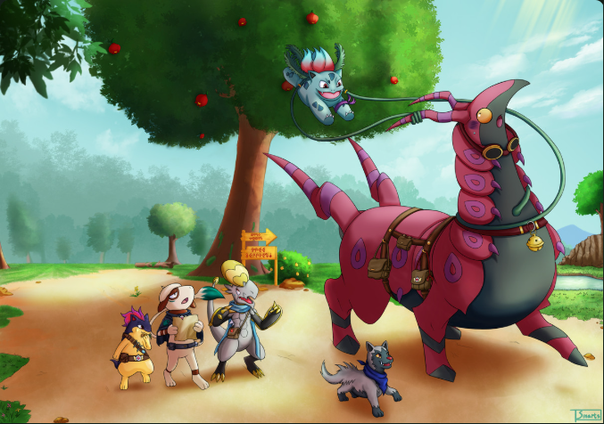
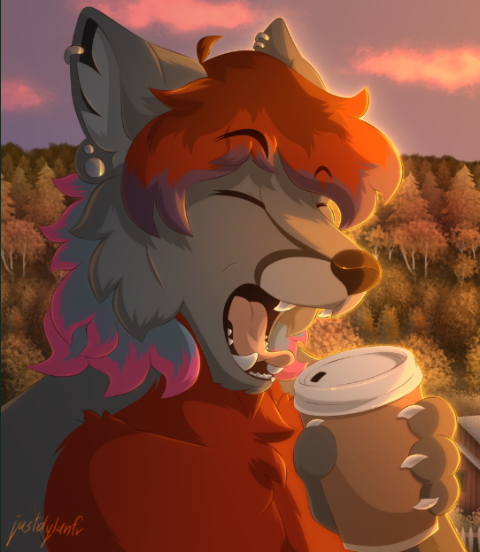
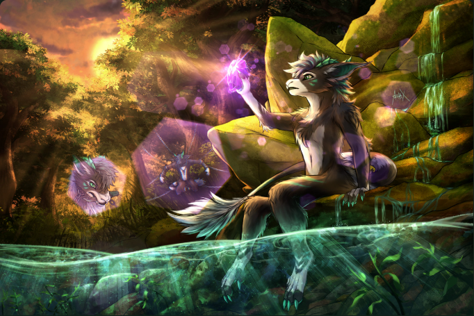

01 / DISCOVERLet the artwork
Let the artwork
take the screen.
Search by tag across eight boorus and your own compatible connections. Open a post, move between finds, or step into fullscreen.
artistlandscapesafe

FOLLOW YOUR CURIOSITY
Your favorite boorus. Your own archive. One familiar place to come back to.
Windows release candidate · Android testing preview

FROM A FIND TO A FAVORITE
Search by tag across eight boorus and your own compatible connections. Open a post, move between finds, or step into fullscreen.

Save when you choose. Foliuna keeps the original, categorized tags and source history together, without making duplicate copies.

Browse saved tags, build Collections and export your Android archive to Windows. Your favorites keep their context wherever you take them.
ACTUAL APP · SAFE E621 SEARCH


Captured in Foliuna with safe-only enabled, searching forest landscape -gore -blood -horror -young -nudity -kiki_(krita). The opening images come from these results, with artist credits beside each image. Featured artwork credits and sources · All screenshot credits.
A FAMILIAR WORKSPACE, EVERYWHERE
The same green workspace, with mouse and keyboard controls on desktop and touch navigation on your phone.
Original proportions or a cropped grid. Sample and full-size images, GIFs and videos, with a focused viewing experience.
Encrypted API credentials, checked and paced requests, private storage and portable sidecars. No Foliuna account or cloud library.
CLEAR BOUNDARIES
No analytics or cloud account. In the app, your chosen providers receive search and media requests under their own policies. Keys are encrypted locally and sent only to their configured API.
The opening image changes every five seconds among the same reviewed search results. This site uses a fixed, reviewed selection of non-explicit artwork from e621. Images are served with this site; visiting it makes no booru API requests. Each featured artist and source is linked beside their work. Artwork copyrights remain with the artists; attribution does not imply a reuse license. Artwork is illustrative and does not imply artist endorsement.
Safe-only starts on in the app. Export excludes credentials and private settings.
START YOUR OWN LIBRARY
Windows 10/11 · x64
View Windows releases ↗Loading published release information…
Unsigned release candidate. Review the release notes and checksum before installing.
Android 8.0+ · testing preview
View preview status ↗Forthcoming — a download appears after its APK passes verification.
Debug-signed, separate preview app. Export before uninstalling or changing signing identity: uninstalling removes private archives. Foreground downloads only.
Install only from this project’s releases. Android may require permission for the installing app and additional developer verification steps depending on your device/region. Follow the current Android guidance and the preview installation and backup guide. Android Studio/ADB is an option for testing builds. No production signing identity or Google Play release is provided.